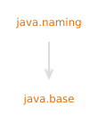

模块 java.naming
module java.naming
定义 Java 命名和目录接口 (JNDI) API。
Common standard JNDI environment properties that may be supported
by JNDI providers are defined and documented in
Context. Specific JNDI provider implementations
may also support other environment or system properties, which are specific
to their implementation.
- 实现说明:
- The following implementation specific environment properties are supported by the
default LDAP Naming Service Provider implementation in the JDK:
java.naming.ldap.factory.socket:
The value of this environment property specifies the fully qualified class name of the socket factory used by the LDAP provider. This class must implement theSocketFactoryabstract class and provide an implementation of the static "getDefault()" method that returns an instance of the socket factory. By default the environment property is not set.com.sun.jndi.ldap.connect.timeout:
The value of this environment property is the string representation of an integer specifying the connection timeout in milliseconds. If the LDAP provider cannot establish a connection within that period, it aborts the connection attempt. The integer should be greater than zero. An integer less than or equal to zero means to use the network protocol's (i.e., TCP's) timeout value.
If this property is not specified, the default is to wait for the connection to be established or until the underlying network times out.
If a custom socket factory is provided via environment propertyjava.naming.ldap.factory.socketand unconnected sockets are not supported, the specified timeout is ignored and the provider behaves as if no connection timeout was set.com.sun.jndi.ldap.read.timeout:
The value of this property is the string representation of an integer specifying the read timeout in milliseconds for LDAP operations. If the LDAP provider cannot get a LDAP response within that period, it aborts the read attempt. The integer should be greater than zero. An integer less than or equal to zero means no read timeout is specified which is equivalent to waiting for the response infinitely until it is received.
If this property is not specified, the default is to wait for the response until it is received.com.sun.jndi.ldap.tls.cbtype:
The value of this property is the string representing the TLS Channel Binding type required for an LDAP connection over SSL/TLS. Possible value is :- "tls-server-end-point" - Channel Binding data is created on the basis of the TLS server certificate.
"tls-unique" TLS Channel Binding type is specified in RFC-5929 but not supported.
If this property is not specified, the client does not send channel binding information to the server.
The following implementation specific system properties are supported by the default LDAP Naming Service Provider implementation in the JDK:
com.sun.jndi.ldap.object.trustSerialData:
The value of this system property is the string representation of a boolean value that controls the deserialization of java objects from thejavaSerializedDataLDAP attribute, reconstruction of RMI references from thejavaRemoteLocationLDAP attribute, and reconstruction of binary reference addresses from thejavaReferenceAddressLDAP attribute. To allow the deserialization or reconstruction of java objects fromjavaSerializedData,javaRemoteLocationorjavaReferenceAddressattributes, the system property value can be set totrue(case insensitive).
If the property is not specified the deserialization of java objects from thejavaSerializedData, thejavaRemoteLocation, orjavaReferenceAddressattributes is not allowed.jdk.jndi.object.factoriesFilter:
The value of this system property defines a filter used by the JNDI runtime implementation to control the set of object factory classes which will be allowed to instantiate objects from object references returned by naming/directory systems. The factory class named by the reference instance will be matched against this filter. The filter property supports pattern-based filter syntax with the same format asjdk.serialFilter. Limit patterns specified in the filter property are unused. This property can also be specified as a security property. This property is also supported by the default JNDI RMI Provider.
The default value allows any object factory class specified by the reference instance to recreate the referenced object.jdk.jndi.ldap.object.factoriesFilter:
The value of this system property defines a filter used by the JDK LDAP provider implementation to further restrict the set of object factory classes which will be allowed to instantiate objects from object references returned by LDAP systems. The factory class named by the reference instance first will be matched against this specific filter and then against the global filter. The factory class is rejected if any of these two filters reject it, or if none of them allow it. The filter property supports pattern-based filter syntax with the same format asjdk.serialFilter. Limit patterns specified in the filter property are unused.
The default value allows any object factory class provided by the JDK LDAP provider implementation.
This system property will be used to filter LDAP specific object factories only if globalObjectFactoryBuilderis not set.
Other providers may define additional properties in their module description:
- 模块图:

- 自:
- 9
{kind=link}
-
包
导出包描述Provides the classes and interfaces for accessing naming services.Extends thejavax.namingpackage to provide functionality for accessing directory services.Provides support for event notification when accessing naming and directory services.Provides support for LDAPv3 extended operations and controls.Provides the Service Provider Interface for DNS lookups when performing LDAP operations.Provides the means for dynamically plugging in support for accessing naming and directory services through thejavax.namingand related packages. -
服务
提供使用类型描述This interface represents a factory that creates an initial context.Service-provider class for DNS lookups when performing LDAP operations.This class implements the LDAPv3 Extended Response for StartTLS as defined in Lightweight Directory Access Protocol (v3): Extension for Transport Layer Security The object identifier for StartTLS is 1.3.6.1.4.1.1466.20037 and no extended response value is defined.
Java API 非官方中文翻译项目 · GitHub · 报告此页面的问题或提出改进建议 · 查看完整中文版权声明
中文翻译文本版权 © 2026 本翻译项目贡献者，以 知识共享 署名-相同方式共享 4.0 国际 (CC BY-SA 4.0) 许可证发布。原始英文内容版权归 Oracle 所有，使用受原始许可条款约束。